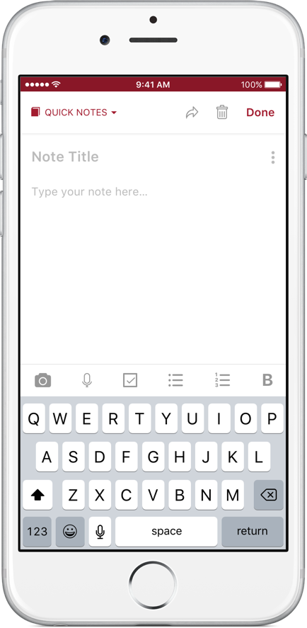

NoteDelight Desktop App
Sign In Page
In this project, I want to design a note-taking application which allows users to capture notes, organize them into notebooks and refer to their notes frequently for inspiration and learning purposes. The idea came from my interaction with other apps like Evernote, Simple Note, Keep... where it is quite difficult for me to organize and find my notes. Here are some examples of Evernote UI that create users' inconveniences:
1) The notes are stacked up and listed row by row, without any highlighting features. This layout makes it really hard for users to scan through and look for a particular note, espcially when they have large number of notes. I always have to open one by one to find the intended notes. While Evernote allows users to favourite a note, it doesn't have a clear or prominent section to display these notes. Hence, many times I also forget that I have some favourite notes to refer back.
2) This stacking layout also doesn't invite re-reading and for those who write notes for inspiration or learning, it would defeat their purpose. For example, I used to keep a few notes on cooking recipes I want to try out, just for them to be buried down under a stack of notes and never be referred back.
3) Common functions like adding a note into a notebook is pretty troublesome. For example in Evernote, I have to take a few steps to add a note into a desired notebook. The dropdown box of notebook list also requires some eyeballing to find the intended notebook.
As I conceptualized the design of NoteDelight, I looked deep into users' motivations to take notes and identified 2 main purposes:
1) Users take some casual notes (like grocery shopping list) or some documents for future reference (like archiving some utility bills). For this purpose, a good search function will do all the needs
2) Users note down something they find inspiring that they want to apply or try out in the future. For this purpose, users want to be in touch with their notes and refer to them more frequently.

NoteDelight Home Page
When I designed NoteDelight app, not only I wanted to address the shortcomings above but also to provide users with as much usable and delightful experience as possible especially when they have to manage a large number of notes:
1) Users' home page is kept simple and focused, by displaying the most frequently used functions users would use like viewing recent notebooks, creating a new notebook, viewing favourite notes, adding a new note into a notebook... I borrowed the idea of magazine layout where each notebook section contains its recent notes, followed by another section. I think this section layout will make it quick for users to scan through their notes. I also made it customisable for users to arrange the sequence of notebook sections or remove some notebook sections that is not of their immediate interest and keeping those they want to refer frequently at the moment. All these features are to help those who take notes for learning or inspiration to be in touch with their notes and invite them to re-read them.
2) Notebooks are given covers and notes can be colored or marked as favourite. They are presented in card format like a resemblance of physcial ones. As users' number of notes and notebooks increase, this layout will speed up their scanning process
3) The design made it incredibly easy for users to perform frequently-used functions like adding a new note or adding a note into a specific notebook, or moving a note from one notebook to another.
Create New Note

Create New Notebook

Notebook Page

View Note

Notes in a Notebook